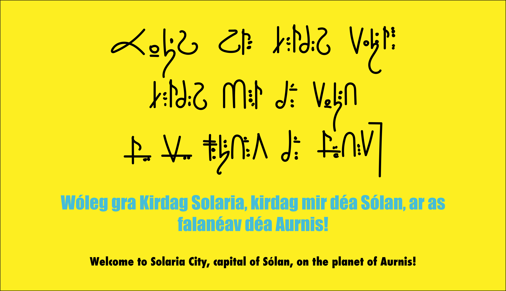

Anjali Suthar
Blast Off
Blast Off is a net art project in which I created a short game in the "choose your own adventure" style. The project follows a space explorer's (very short) journey through space and the perils encountered on the trip. I combined elements from the BBC show Doctor Who as well as my own sci-fi novel which I finished writing a few years ago. Only one page feature content from Doctor Who, while the rest is content from my novel. It includes some backstory and in-world history, mentions my main character by name, and also features one of the conlangs (constructed languages) which I created for the book. The website opens with an image of a spaceship flying into space, which leads to the page inspired by Doctor Who.
Two options are presented on the page. You can land on that planet, or travel on to the next planet, which is called Aurnis, the planet from my novel. This page features a conscript (constructed script) and transliteration of a bit of text in Kéttemer Solari, one of the main languages I created for the book. Underneath is a translation of the Kéttemer text in English, which is a message welcoming you to the city, or Kirdag, of Solaria. Upon entering the city you are presented with the the problem the city is currently facing and you can choose whether to help or leave the planet. The full site is available here.
If interested, you can also take a look at my conlangs on my Instagram, @aurnisconlangs.